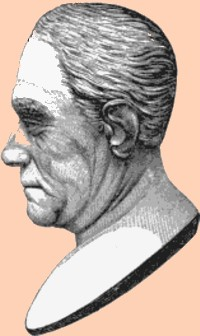

John V. Henry
John Vernor Henry probably was born about 1767. He was the son of Robert and Elizabeth Vernor Henry. He was the brother and sometime business associate of Albany merchant Robert R. Henry. He grew up in the Court Street home of a prominent Albany merchant. His mother died in 1788 and his father passed in 1794.
In 1792, he had possession of a collection of books and personal items belonging to his late uncle.
His wife was Charlotte Seaton (Seton) - sister of Robert R.'s wife.
In 1800, his first ward household included three young sons.
He was an officer and trustee of a number of Albany-based organizations including Union College.
Admitted to practice as early as 1791, John V. Henry was an attorney by profession with his office listed in the city directories at 19 Columbia Street. He is said to have trained a number of attorneys including John Van Ness Yates.
In 1800, he was Comptroller of New York State. He was Attorney General of New York State.
In 1805, he was among the prominent owners of "Guy Park" - a confiscated Tory estate in Amserdam, New York.
In October 1829, John V. Henry "a distinguished lawyer, fell in the street from apoplexy, and died on the following day, aged 64." Letters of administration were issued. His grave is in the Albany Rural Cemetery.
Engraving of a bust of John V. Henry of unknown origins as printed near page 192 in volume 9 of the Annals of Albany.